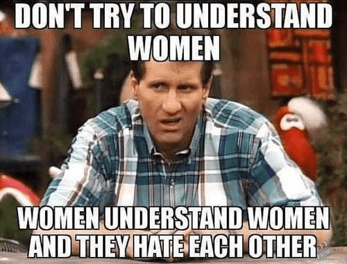

Norman loves to Crush his enemies, see them driven before him, and hear the lamentations of their women.


The city of Birmingham, Alabama has been a struggling, aging city, known worldwide for the racism and violence of the 1960s, it has faced a declining population for the past 5 decades. In recent years, following the national trend of re-urbanization and gentrification, there was renewed interested in the downtown area. One of the biggest announcements was that the minor league baseball team would be relocating from a white suburb to the downtown area.
Note how the ballfield was positioned facing North (downtown)
In 2012, a new baseball stadium for the minor league Double-A class Birmingham Barons was announced. The site chosen was adjacent to another large gentrification project, Railroad Park, a 19 acre public park with lake which opened on an abandoned site in 2010. City planners hoped to spur development of this largely abandoned area of the city, and to build on the positive momentum of the park with an adjacent ballfield.
American ballparks are perhaps the most stereotypically American thing there is, besides war and obesity. And the great ballparks of the nation are widely recognized for their architecture, style, and integration into their respective cities. Indeed, the motivation for moving the Baron’s ballpark into downtown Birmingham was to give it an urban feel, and associate the team with the city of Birmingham visually, as opposed to an out-of-town hobby for the suburbanites to attend.
The Baseball Field was strategically placed with a view of the city skyline, early pictures show
With this in mind, the location, design, and visual appearance of the park were all important elements of its planning. The city’s lodging tax was more than doubled, to finance taxpayer funding of the facility. The new stadium, designed to seat 8,500, was designed by HKS Architecture of Dallas, Texas, a professional international design firm with a specialty in designing sports stadiums. The firm, founded in 1939, established a sports division in 1992, led by Bryan Trubey, a well known sports architect, who designed three NFL stadiums, including the elaborate and expensive Cowboys Stadium which hosted the 2010 Super Bowl, and is currently working with Mark Cuban to design a new Dallas Mavericks facility.
Site ready for construction, with city skyline in background
The hiring of an outside, credentialed sports professional was seen as an exciting and encouraging, if somewhat surprising move for the city of Birmingham, which is ranked #154 among minor league sports markets, and anticipation for the planned stadium was palpable. The location of the park, just below the railroad tracks which demarcate the city’s north downtown area and south side, was ideal. The southern side was home to most of the entertainment venues and housing facilities, and the source of most of the fanbase, while the north side anchored the downtown cityscape as a background upon which to set the new, urban ball field.
Was someone here trying to have some FUN?
Before construction began, the project passed before a design approval committee, made up of volunteers who enjoy the authority of telling people what they can do with their own private property. This group of busybodies vetoed the design, insisting that the stadium should instead face a hospital and multi story parking deck, seating and signage would need to be redesigned, and the view of downtown was not acceptable, because, according to the group, “the invisible architectural boundaries” of the park must be respected. Yes, that’s right, the thought of thousands of baseball fans eye-raping the park as they enjoyed the urban setting was too much, and the plan was vetoed.

One could argue that the entire rationale for moving the park downtown, which was to maintain an urban feel and look, had just been removed from the entire project. But the $60 million plan was already underway. The only solution, to appease this group, was to rotate the park to face the concrete parking deck, overruling the opinion of the team of men who were so passionate about sports that they dedicated their lives to studying, designing, and creating the most exciting, enjoyable venues in which to enjoy the sport. Men who had played baseball as children, traveled throughout the world studying and observing sports facilities, talking with fans, players, and owners, and who work day in and out, year after year, decade after decade, planning and designing sports facilities. No, this group who was paid big bucks for their professional opinion was vetoed to appease a few small town obstructionist feminists.
80 foot tall lettering is “discreet, low key, and not overwhelming” but viewing the city skyline is rape, because reasons
Besides changing the park’s orientation, the committee ordered additional changes to HKS Architecture’s plan, including rejecting their plan for an LED message board with scrolling phone numbers for ticket sales because “we have a policy against that, and only words, not numbers, can be used.” To this group of wannabe cat lady construction foremen, the flashy, 18′ tall sign was fine, as long as it didn’t display an Arabic numeral, in which case it immediately would become an eyesore.
In order to preserve any remnant of a view of the city skyline, the upper level premium seating areas along the third baseline had to be completely removed from the plan, limiting the profitable premium space sold for corporate and private party use available to the ballpark operator.
And in the most amusing comment of the whole debacle, Cheryl Morgan, architecture professor at Auburn Urban Studio and Design Review Committee member who vetoed the HKS plan, described the 80 foot tall lettering along the side of the building as “fairly descreet and low key… not overwhelming the building.” lolz.
Minnesota Twins

PNC Park Pittsburgh
Citizens Bank, Philadelphia
Busch Stadium, St Louis
Petco Park, San Diego
Detroit Comerica Park
SF Giants Park, San Francisco Bay
Wrigley Field
Masculine Planned View from Birmingham’s Stadium
Actual view “Ain’t that better?”
Throughout history, beautiful architecture, art, music, and poetry was created almost exclusively by men. If a woman is genuinely talented in a certain field, her contributions should be celebrated and encouraged. But when a know-nothing body of obstructionists intervene and deliberately destroy a man’s beautiful vision, a serious public crime has occurred. For decades, baseball fans in Alabama will be stuck with an inferior stadium. Wise men are overruled and their experience and expertise are ignored. Meanwhile, the fun-destroying feminists can say “mission accomplished” and receive validation that they have done something productive, as they had the final say. Don’t let this happen in your city.
Don’t Miss: Why Do Sports Blogs Hate Sports Fans?